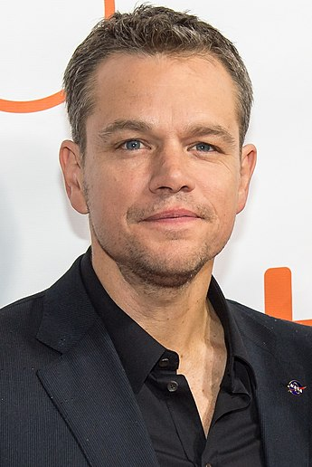

|  |
|
A carreira de Matt Damon começa de fato em 1988, aos dezoito anos de idade, quando o ator tem uma única fala na comédia romântica Mystic Pizza. Quatro anos mais tarde ele consegue um papel de destaque em Geronimo: An American Legend, mas é somente em 1997 que ele desponta em Hollywood, como ator e roteirista de Gênio Indomável, pelo qual ele ganha o Oscar. Grandes projetos vêm logo depois, como O Homem Que Fazia Chover (1997) de Francis Ford Coppola e O Resgate do Soldado Ryan (1998), de Steven Spielberg, confirmando o nome de Damon como um dos atores mais promissores da nova geração..
Matt Damon é um ator, roteirista e produtor norte-americano. Damon fez sua estreia no cinema aos 18 anos de idade, na comédia romântica Mystic Pizza, no entanto com uma única fala. Aos 22 anos, tem um papel de destaque considerável em Geronimo: An American Legend, mas sua carreira só despontaria em 1997, como ator e roteirista em Gênio Indomável, tal que recebeu dois indicações ao Óscar, de Melhor ator e melhor roteiro original, vencendo o último.
| Ano | Título Original | Titulo no Brasil | Papel |
| 1988 | The Good Mother | O Preço da Paixão | Extra |
| 1989 | Field of Dreams | Campo dos Sonhos | Fenway Park |
| 1992 | School Ties | Código de Honra | Charlie Dilion |
| 1993 | Geronimo: An American Legend | Gerônimo: Uma lenda americana | Britton Davis |
| 1995 | The Good Old Boys | Os Bons e Velhos Companheiros | Cotton Calloway |
| 1996 | Glory Daze | Dias de Glória | Edgar Pudwacker |
| 1997 | The Rainmaker | O Homem que fazia Chover | Rudy Baylor |
| 2021 | Ocean's Eleven | Onze Homens e um segredo | Linus Caldwell |
| 2023 | Thor: Love and Thunder | TThor: Amor e trovão | Loki |